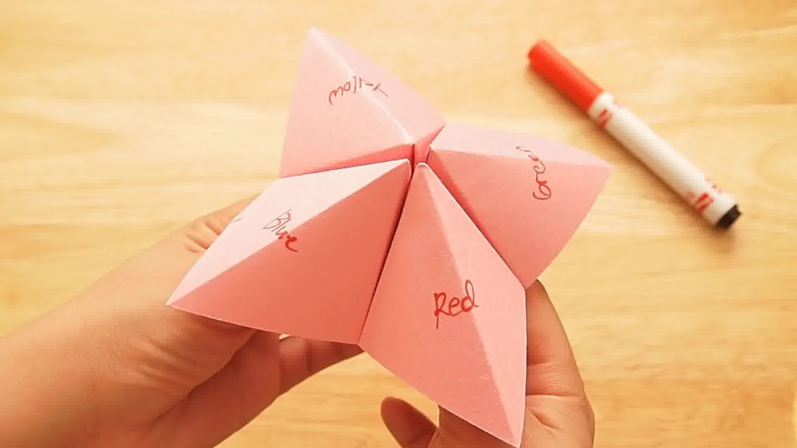
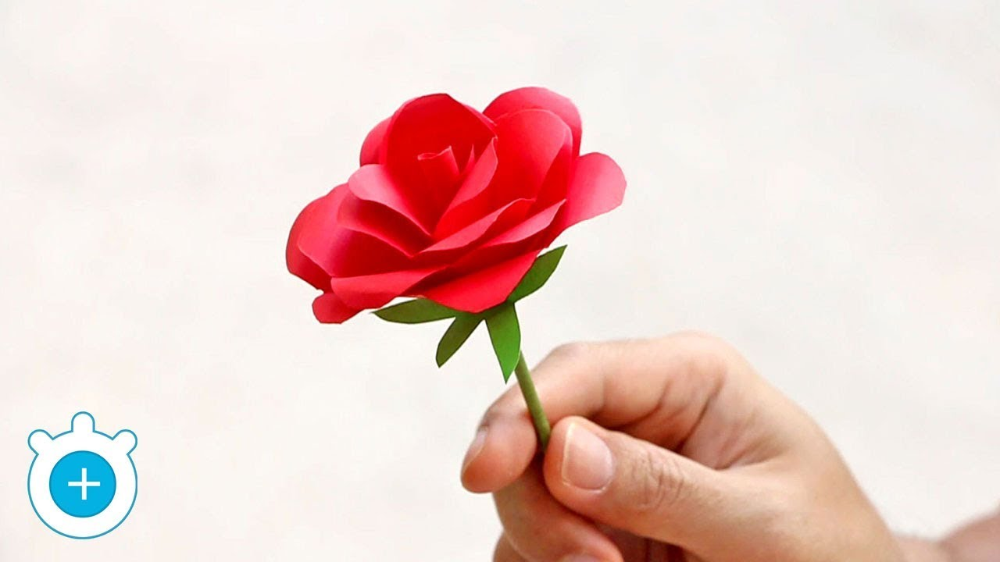
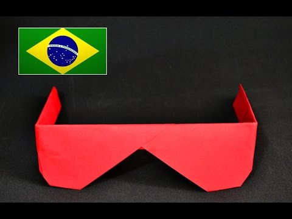
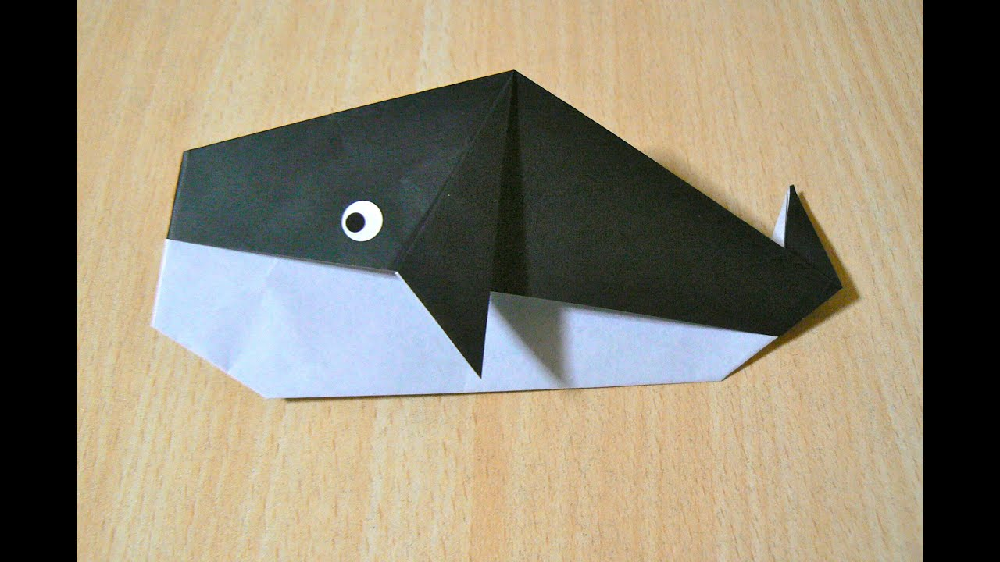
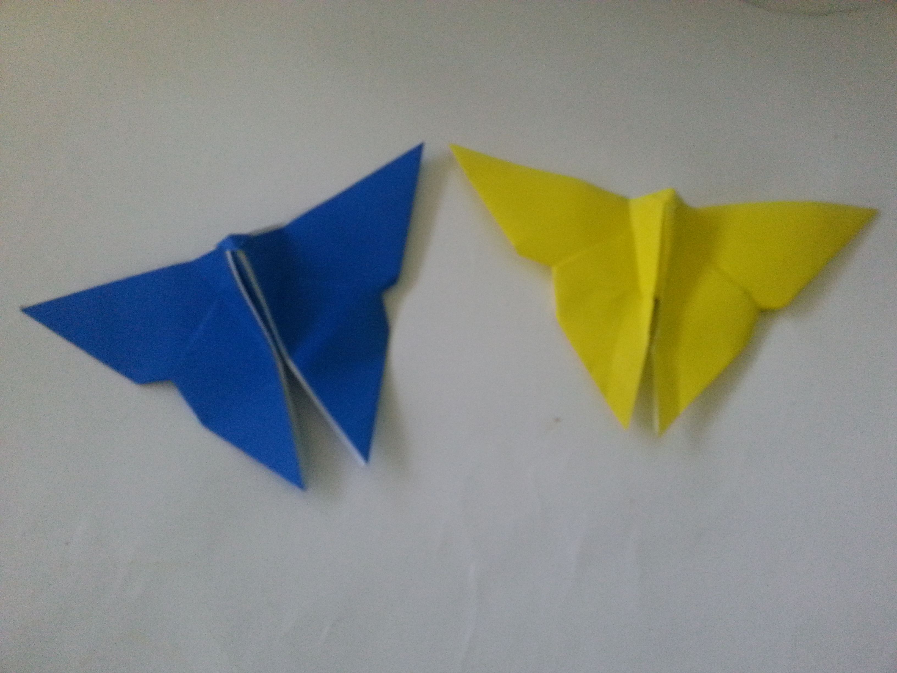
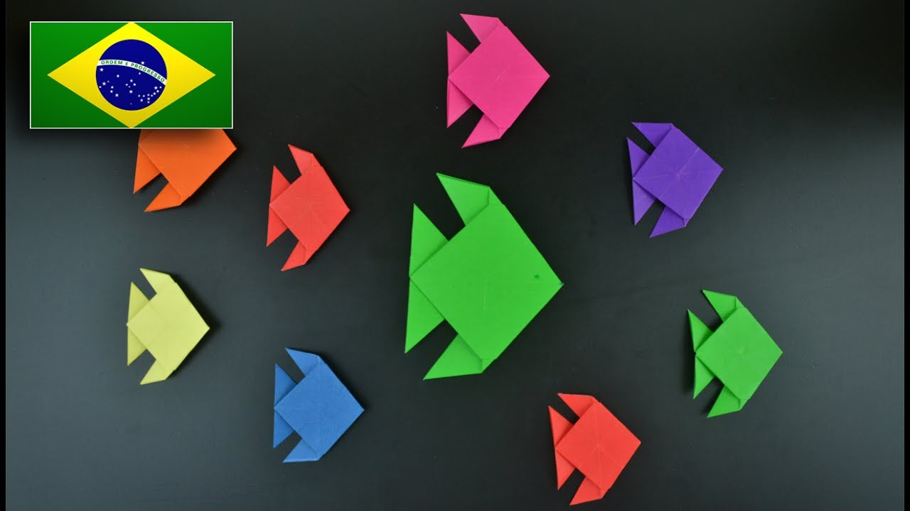
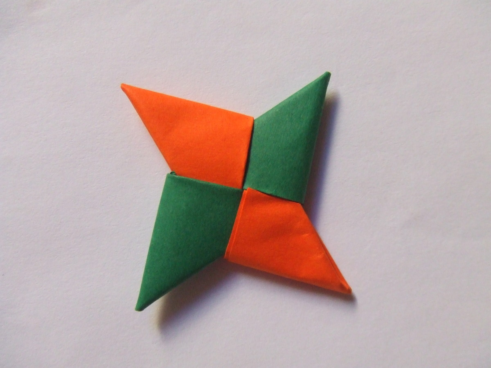
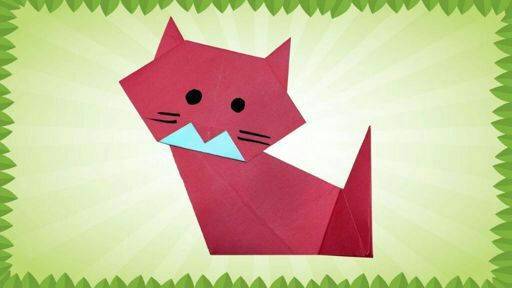
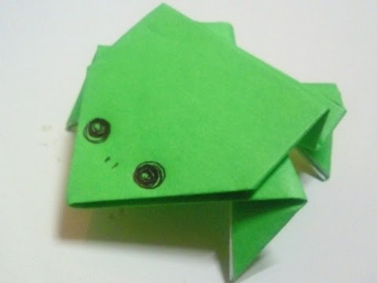
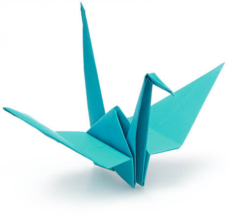

Origami
Benefícios
Auxilia na expressão artística.
Proporciona conhecimento sobre outras culturas.
Desenvolve a autoestima.
Promove a integração social.
Proporciona a sensação de bem-estar.
Aumenta a concentração.
História
Origami é uma arte milenar japonesa nascida há quase mil anos na Corte Imperial, onde era conhecido como um passatempo divertido e interessante. Com o passar dos anos esta arte foi transmitida ao povo que adotou-a com o entusiasmo e transformou-se em uma arte conhecida no mundo todo.
Vamos começar
- Fase 1 -
|
Clique aqui. - Coração - |

Clique aqui. - Sorte - |

Clique aqui. - Rosa - |
Clique aqui. - Avião - |
- Fase 2 -

Clique aqui. - Cachorrinho - |

Clique aqui. - Óculos - |
Clique aqui. - Barco - |

Clique aqui. - Baleia - |
- Fase 3 -
| 
Clique aqui. - Borboletas - |

Clique aqui. - Peixinhos - |

Clique aqui. - Estrela - |

Clique aqui. - Gatinho - |
- Fase 4 -
| 
Clique aqui. - Sapo - |

Clique aqui. - Tsuru - |

Clique aqui. - Elefante - |

Clique aqui. - Dragão - |
Curiosidades
O origami é tão especial para os japoneses que ganhou um dia especial, o 11 de novembro, quando é comemorado o Origami Days (Dia Mundial do Origami). A data foi escolhida por marcar o final da Primeira Guerra Mundial e seu símbolo é o origami de um tsuru ou grou, ave tradicional do país.
O Monumento à Sadako: um marco que representa todas as vítimas do holocausto nuclear.